ORDONANȚA DE URGENȚĂ nr. 195 din 12 decembrie 2002privind circulația pe drumurile publicePublicat în
MONITORUL OFICIAL nr. 958 din 28 decembrie 2002
În temeiul art. 114 alin. (4) din Constituție,
Guvernul României adopta prezenta ordonanță de urgență.
Capitolul 1 Dispoziții generale
Articolul 1
(1) Circulația
pe drumurile publice a vehiculelor, pietonilor și a celorlalte
categorii de participanți la trafic, drepturile, obligațiile și
răspunderile ce revin persoanelor fizice și juridice, precum și
atribuțiile unor autorități ale administrației publice, instituții și
organizații în legătură cu acestea sunt supuse dispozițiilor prevăzute
în prezenta ordonanță de urgență și în regulamentul de aplicare a
acesteia.(2) Dispozițiile
prevăzute în prezenta ordonanță de urgență au ca scop asigurarea
desfășurării fluente și în siguranța a circulației rutiere, apărarea
vieții și integrității corporale, a sănătății persoanelor, proprietății
publice și private, protecția mediului înconjurător, precum și a
drepturilor și intereselor legitime ale persoanelor în acest domeniu.(3) Autoritatea
competența în domeniul circulației rutiere, precum și de exercitare a
controlului respectării normelor din acest domeniu este Inspectoratul
General al Poliției Române.(4) Reglementările
privind circulația pe drumurile publice se emit de către autoritățile
publice centrale și locale cu atribuții în acest domeniu numai cu
acordul Inspectoratului General al Poliției Române și cu respectarea
înțelegerilor internaționale la care România este parte.(5) Prevederile
prezentei ordonanțe de urgență se aplică tuturor participanților la
trafic, precum și autorităților care au atribuții în domeniul
circulației și siguranței rutiere.
Articolul 2
Îndrumarea,
supravegherea și controlul respectării normelor de circulație rutiera
se fac de către politisti specializați și anume desemnați prin
dispoziție a inspectorului general al Inspectoratului General al
Poliției Române, care au obligația de a lua măsurile legale în cazul în
care constata încălcări ale normelor privind circulația pe drumurile
publice.
Articolul 3
Circulația
pe drumurile publice din zona de frontieră și din alte zone pentru
care, potrivit legii, s-au stabilit restrictii se face cu respectarea
reglementărilor instituite pentru acele zone.
Articolul 4
(1) Controlul
circulației vehiculelor aparținând Ministerului Apărării Naționale se
efectuează de către poliție, precum și de către personalul din structura
desemnată de acest minister.(2) Cercetarea
accidentelor de circulație în care au fost angajate vehicule din
categoria celor prevăzute la alin. (1) se efectuează de către poliție.
La locul accidentului poate asista și un reprezentant al Ministerului
Apărării Naționale.
Articolul 5
(1) Administratorul
drumului public este obligat sa semnalizeze corespunzător orice
obstacol aflat pe partea carosabilă, care stanjeneste sau pune în
pericol siguranța circulației, și sa ia toate măsurile de inlaturare de
îndată a acestuia.(2) Se
interzice amplasarea construcțiilor de orice fel în zona statiilor
mijloacelor de transport în comun, cu excepția celor destinate
refugiilor pentru călători.(3) În
caz de producere a unui eveniment rutier ca urmare a stării tehnice a
drumului public sau a semnalizarii necorespunzătoare a obstacolelor ori
lucrărilor care se executa pe acesta, administratorul drumului public,
respectiv executantul lucrărilor, răspunde contraventional, civil sau
penal, după caz.(4) Orice
măsură de restrictie a circulației pe drumurile publice se dispune de
către administratorul drumului numai cu acordul poliției.
Articolul 6
În sensul prezentei ordonanțe de urgență, expresiile și termenii de mai jos au următorul înțeles:
1.
drum public - orice cale de comunicație terestra, destinată traficului
rutier, dacă este deschisă circulației publice. Drumurile care sunt
închise circulației publice sunt semnalizate la intrare cu inscripții
vizibile;
2. localitate - spațiul ce cuprinde clădiri, ale cărui intrari și iesiri sunt semnalizate ca atare;
3.
zona rezidentiala - perimetrul dintr-o localitate unde se aplică reguli
speciale de circulație, având intrările și ieșirile semnalizate ca
atare;
4.
zona pietonala - perimetrul care cuprinde una sau mai multe străzi
rezervate circulației pietonilor, unde accesul vehiculelor este supus
unor reguli speciale de circulație, având intrările și ieșirile
semnalizate ca atare;
5.
parte carosabilă - porțiunea din platforma drumului destinată
circulației vehiculelor. Un drum poate cuprinde mai multe părți
carosabile complet separate una de cealaltă printr-o zona despartitoare
sau prin diferența de nivel;
6. acostament - fasia laterala cuprinsă între limita părții carosabile și marginea platformei drumului;
7.
banda de circulație - spațiu longitudinal al părții carosabile,
materializat sau nu prin marcaje rutiere, dacă are o latime
corespunzătoare pentru circulația cu usurinta a unui șir de vehicule,
altele decât vehiculele care se deplaseaza pe doua roti;
8.
banda reversibila - subdiviziunea longitudinala a părții carosabile,
situata lângă axul drumului, destinată circulației autovehiculelor
într-un sens sau în altul, în funcție de intensitatea traficului;
9.
banda pentru staționarea de urgenta - subdiviziunea longitudinala
suplimentară situata la extremitatea dreapta a autostrazii, destinată
exclusiv stationarii autovehiculelor în cazuri de forta majoră;
10.
pista pentru biciclete - una dintre subdiviziunile părții carosabile
sau o porțiune din trotuar ori acostament, materializata prin marcaje
rutiere și/sau semnalizata prin indicatoare, destinată numai circulației
bicicletelor și ciclomotoarelor;
11.
trotuar - spațiul din partea laterala a drumului, separat în mod
vizibil de partea carosabilă prin diferența sau fără diferența de nivel,
destinat circulației pietonilor;
12. intersectie - orice incrucisare, jonctiune sau bifurcare de drumuri, inclusiv spațiile formate de acestea;
13.
autostrada - drumul conceput și construit special pentru circulația
autovehiculelor cu sau fără remorci, care nu servește proprietăți
alăturate și care:
-
are pentru cele doua sensuri de circulație părți carosabile distincte,
separate între ele printr-un spațiu care nu este destinat circulației
sau, excepțional, prin alte modalități, cu excepția locurilor speciale
sau cu caracter temporar;
- nu intersectează la nivel drumuri, cai ferate sau linii de tramvai;
- este prevăzută cu semnalizare specială;
14.
trecere la nivel - incrucisarea la nivel dintre un drum public și o
cale ferată sau linie de tramvai, care dispune de o platforma
independenta;
15.
vehicul - un sistem mecanic care se deplaseaza pe drum, cu sau fără
mijloace de autopropulsare, utilizat în mod curent pentru transportul de
persoane și/sau bunuri ori pentru efectuarea de servicii sau lucrări;
16.
bicicleta - vehiculul prevăzut cu doua roti și pedale sau manivele,
care se deplaseaza pe drum, acționat de forta musculara a
utilizatorilor;
17.
motocicleta - autovehiculul cu doua sau trei roti, al cărui motor are o
capacitate cilindrică mai mare de 50 cmc, cu sau fără atas și/sau o
viteză maxima, prin construcție, mai mare de 50 km/h, a cărui masă
proprie nu depășește 400 kg;
18.
ciclomotor - vehiculul cu doua sau trei roti, care este prevăzut cu un
motor cu ardere interna, având o capacitate cilindrică de cel mult 50
cmc, care păstrează caracteristicile generale ale bicicletei, putând fi
pus în mișcare și cu ajutorul pedalelor, și a cărui viteză de deplasare,
prin construcție, nu depășește 50 km/h;
19.
autovehicul - vehiculul prevăzut cu un dispozitiv mecanic propriu de
propulsie; vehiculele care se deplaseaza pe sine, denumite tramvaie, și
ciclomotoarele nu sunt considerate autovehicule. Definitia include și
termenul automobil, care reprezintă oricare dintre vehiculele cu motor
care servesc în mod normal transportului pe drum al persoanelor sau
bunurilor ori la tractarea pe drum a vehiculelor utilizate pentru
transportul de persoane sau bunuri. Acest termen include troleibuzele,
adică vehiculele care sunt cuplate la o rețea electrica, dar care nu
circula pe sine. Acesta nu include vehiculele, cum ar fi tractoarele
agricole, a căror utilizare pentru transportul rutier de persoane sau
mărfuri ori pentru tractarea unor vehicule care transporta persoane sau
mărfuri nu este decât ocazionala;
20.
tractor - autovehiculul destinat prin construcție și echipare tractarii
altor vehicule sau efectuării unor lucrări specifice;
21. remorca - vehiculul fără motor destinat a fi tractat de un autovehicul;
22. semiremorca - remorca a carei masa totală maxima autorizata este preluată în parte de către autovehiculul tragator;
23. remorca ușoară - remorca a carei masa totală maxima autorizata nu depășește 750 kg;
24.
masa totală maxima autorizata - masa totală maxima a unui vehicul
încărcat, declarata admisibilă de către autoritatea competentă;
25.
vehicul cu mase și/sau dimensiuni de gabarit depășite - vehiculul care,
datorită dimensiunilor sale ori mărfurilor transportate, depășește în
lungime, latime sau în înălțime limitele maxime ori masele maxime admise
prin legislația în vigoare;
26.
conducător - persoana care determina punerea în mișcare și acționează
asupra direcției de deplasare pe drum a vehiculelor și animalelor
izolate sau în turma, celor de tracțiune, povara ori de calarie;
27. participant la trafic - conducătorul sau pietonul care circulă pe drumul public;
28.
coloana oficială - autovehiculul sau grupul de autovehicule însoțit de
cel puțin un vehicul al poliției ce are în funcțiune mijloacele speciale
sonore și luminoase;
29.
vehicul în circulație internationala sau în trafic internațional -
vehiculul care, prin deplasarea sa, depășește cel puțin o frontieră de
stat.
Capitolul 2 Vehiculele
Secţiunea 1 Starea tehnica a vehiculelor și controlul acesteia
Articolul 7
Orice
vehicul care circulă pe drumurile publice trebuie să corespundă
normelor tehnice privind siguranța circulației rutiere, protecția
mediului și folosință conform destinației.
Articolul 8
Autovehiculele
și remorcile înmatriculate în alte state pot circula în trafic
internațional pe teritoriul României dacă îndeplinesc cel puțin
condițiile tehnice prevăzute în Convenția internationala asupra
circulației rutiere, încheiată la Viena la 8 noiembrie 1968 și
ratificată de România prin Decretul nr. 318/1980.
Articolul 9
(1) Pentru
a fi înmatriculate, înscrise și menținute în circulație,
autovehiculele, remorcile și tramvaiele se supun inspecției tehnice.(2) Inspecția tehnica se efectuează periodic în stații autorizate, conform legislației în vigoare.(3) Pentru
autovehiculele aparținând Ministerului Apărării Naționale, Ministerului
de Interne, Serviciului Roman de Informații, Serviciului de Informații
Externe, Serviciului de Protecție și Paza și Serviciului de
Telecomunicații Speciale, inspecția tehnica se efectuează în stații
proprii, autorizate potrivit legii.
Articolul 10
(1) Este
interzisă circulația pe drumurile publice a vehiculelor care nu
corespund din punct de vedere tehnic, precum și în cazul în care
termenul de valabilitate al inspecției tehnice a expirat.(2) Starea
tehnica a autovehiculelor, remorcilor și tramvaielor care circulă pe
drumurile publice se verifica de către poliție împreună cu instituțiile
abilitate de legislația în vigoare.
Secţiunea a 2-a Înmatricularea, înregistrarea și radierea vehiculelor din evidenta circulației
Articolul 11
Proprietarii
de vehicule sunt obligați să solicite înmatricularea sau înregistrarea
acestora înainte de a le pune în circulație ori sa ceara radierea lor
din evidente.
Articolul 12
(1) Pentru
a circula pe drumurile publice vehiculele, cu excepția bicicletelor,
ciclomotoarelor și a celor trase sau impinse cu mana, trebuie să fie
înmatriculate ori înregistrate, după caz, și sa poarte plăcuțe de
înmatriculare sau de înregistrare, ale căror forme și dimensiuni se
stabilesc prin regulamentul de aplicare a prezentei ordonanțe de
urgență, denumit în continuare regulament.(2) Tractoarele,
precum și vehiculele care nu sunt supuse înmatriculării pot circula pe
drumurile publice numai pe traseele și în condițiile stabilite prin
regulament. Conducătorii tractoarelor, mașinilor și utilajelor
autopropulsate agricole, forestiere sau pentru lucrări sunt obligați sa
posede permis de conducere valabil pentru categoriile prevăzute în
regulament.
Articolul 13
(1) Autovehiculele
și remorcile se înmatriculează permanent, temporar sau pentru probe la
autoritatea competentă în a carei raza proprietarii sau deținătorii își
au domiciliul ori reședința, în condițiile stabilite prin regulament.
Autovehiculele care aparțin Ministerului Apărării Naționale și
Ministerului de Interne se înregistrează la aceste ministere și pot,
după caz, să fie înmatriculate și la autoritatea competentă.(2) Autovehiculele
și remorcile pot circula până la înmatriculare cu număr de ordine
provizoriu, pe baza unei autorizații speciale eliberate de autoritatea
competentă.(3) Evidenta
vehiculelor supuse înmatriculării se tine la unitatea de poliție
competența pe raza căreia își are domiciliul sau reședința proprietarul.
Articolul 14
Tramvaiele,
troleibuzele, precum și vehiculele care, datorită destinației lor, nu
circula în mod obișnuit pe drumurile publice se înregistrează de către
consiliile locale în condițiile stabilite în regulament.
Articolul 15
(1) Persoanele
care domiciliază sau își stabilesc domiciliul ori reședința în România
și dețin autovehicule ori remorci înmatriculate în alte state sunt
obligate ca în termen de 90 de zile să le înmatriculeze în circulație în
România.(2) Termenul prevăzut la alin. (1) se calculează:
a) de la data intrării în țara a autovehiculului ori remorcii, pentru persoanele care domiciliază sau care au reședința în România; ...
b) de la data stabilirii domiciliului ori reședinței, pentru persoanele care își stabilesc domiciliul ori reședința în România. ... (3) Pentru
cetățenii străini ai statelor cu care România a încheiat înțelegeri
bilaterale termenul prevăzut la alin. (1) se poate prelungi în
condițiile stabilite în aceste înțelegeri.
Articolul 16
(1) La
data înmatriculării sau înregistrării unui vehicul autoritatea
competentă eliberează un certificat de înmatriculare ori de
înregistrare, după caz, precum și plăcuțe cu numere de înmatriculare sau
de înregistrare.(2) Este
interzisă punerea în circulație a unui vehicul care nu are montate
plăcuțe cu numere de înmatriculare sau de înregistrare atribuite de
autoritatea competentă.
Articolul 17
Înmatricularea
sau înregistrarea unui vehicul se anulează de către autoritatea care a
efectuat-o, în cazul în care aceasta operațiune s-a făcut cu încălcarea
normelor legale sau prin mijloace frauduloase.
Articolul 18
(1) Radierea din evidenta circulației a vehiculelor se face la autoritatea care a efectuat înmatricularea și înregistrarea, astfel:
a) la cererea proprietarului; ...
b) la trecerea vehiculelor în proprietatea altei persoane; ...
c) la schimbarea domiciliului sau sediului proprietarului pe raza altei unități de poliție județene sau a municipiului București; ...
d) la scoaterea definitivă din România a autovehiculelor sau remorcilor; ...
e) în cazul schimbării caroseriei sau sasiului autovehiculelor. ... (2) Radierea
din evidenta circulației a vehiculelor indisponibilizate prin
instituirea unui sechestru asigurator se poate face în baza hotărârii
instanței de judecată, conform legii, de către autoritatea care a
efectuat înmatricularea sau înregistrarea.(3) Este interzisă circulația pe drumurile publice a vehiculelor radiate din evidenta.
Articolul 19
(1) Înmatricularea, înregistrarea și radierea din evidenta a vehiculelor se fac în condițiile stabilite prin regulament.(2) Categoriile
de vehicule care nu sunt supuse înmatriculării sau înregistrării se
stabilesc prin instrucțiuni comune ale Ministerului de Interne și
Ministerului Lucrărilor Publice, Transporturilor și Locuinței.
Capitolul 3 Conducătorii de vehicule
Secţiunea 1 Dispoziții generale
Articolul 20
(1) Conducătorii
de autovehicule trebuie să posede permis de conducere și să aibă vârsta
minima de 18 ani împliniți, cu excepția celor care conduc un
ciclomotor, care trebuie să aibă cel puțin vârsta minima de 16 ani
împliniți.(2) Conducătorii
autovehiculelor care efectuează transport public de persoane trebuie să
aibă vârsta minima de 21 de ani împliniți și să facă dovada ca sunt
angajați ai unui operator de transport, iar cei care conduc vehicule cu
mase și/sau dimensiuni de gabarit depășite sau care efectuează transport
de mărfuri trebuie să posede atestat profesional.(3) Condițiile de obținere a permisului de conducere și a atestatului profesional se stabilesc prin regulament.(4) Persoanele
care nu au împlinit vârsta de 14 ani pot conduce biciclete numai pe
drumurile special amenajate și semnalizate corespunzător de către
administratorul drumului respectiv.
Articolul 21
(1) Cadrele
medicale abilitate, atunci când constata în cadrul atribuțiilor de
serviciu ca o persoană care poseda permis de conducere este inapta
medical sau psihologic pentru a conduce un autovehicul sau tramvai, sunt
obligate sa comunice despre aceasta de îndată poliției specializate în a
carei raza teritorială își desfășoară activitatea.(2) Lista
cu afectiunile medicale incompatibile cu calitatea de conducător de
autovehicule sau tramvaie se stabilește prin ordin al ministrului
sănătății și familiei și se publică în Monitorul Oficial al României,
Partea I.
Articolul 22
(1) Conducătorii
de autovehicule sau tramvaie trebuie să aibă cunoștințele și
indemanarea necesare conducerii și să fie apți din punct de vedere
medical și psihologic.(2) Conducătorii
prevăzuți la alin. (1) vor fi verificați periodic din punct de vedere
medical și psihologic. Poliția poate propune examinarea medicală sau
psihologică, precum și verificarea cunoașterii regulilor de circulație a
conducătorilor de autovehicule sau tramvaie ori de câte ori constata ca
aceștia, prin modul de conducere sau comportamentul lor în trafic, pun
în pericol siguranța circulației.(3) Verificarea
medicală și psihologică prevăzută la alin. (1) și (2) se efectuează în
condițiile stabilite prin ordin comun al ministrului sănătății și
familiei și al ministrului lucrărilor publice, transporturilor și
locuinței.(4) Permisul
de conducere al persoanei care este declarata inapta medical sau
psihologic pentru a conduce autovehicule ori tramvaie se retrage de
către poliția specializată și poate fi redobândit numai după încetarea
motivului pentru care s-a luat această măsură. În situația în care
permisul a fost retras pe o durată mai mare de 3 ani, pentru a-l
redobândi titularul acestuia trebuie să promoveze un test de cunoaștere a
regulilor de circulație.
Secţiunea a 2-a Permisul de conducere
Articolul 23
(1) Dreptul
de a conduce un autovehicul sau tramvai pe drumurile publice îl are
numai persoana care poseda permis de conducere corespunzător categoriei
sau dovada inlocuitoare a acestuia cu drept de circulație.(2) Au
dreptul de a conduce autovehicule sau tramvaie pe drumurile publice și
persoanele care urmează un curs de pregătire practica, în vederea
obținerii permisului de conducere, numai în prezenta și sub
supravegherea directa a unui instructor autorizat în acest sens.(3) Persoanele
care solicită prezentarea la examen în vederea obținerii permisului de
conducere sau a unor noi categorii ale acestuia trebuie să
îndeplinească, potrivit legii, condițiile de vârsta, să fie apte din
punct de vedere medical și psihologic și să facă dovada pregătirii
teoretice și practice, prin cursuri organizate de unități autorizate.(4) Programa
de învățământ a unităților care organizează cursuri de pregătire,
conform alin. (2), se elaborează de Ministerul Educației și Cercetării
și se avizează de către Ministerul de Interne prin Inspectoratul General
al Poliției Române.(5) Categoriile
de vehicule pentru care se eliberează permise de conducere, precum și
condițiile concrete de obținere a acestora se stabilesc prin regulament.(6) Organizarea
și desfășurarea cursurilor în vederea obținerii permisului de conducere
se fac în baza unei metodologii elaborate de către Ministerul
Lucrărilor Publice, Transporturilor și Locuinței împreună cu Ministerul
Educației și Cercetării și Ministerul de Interne.
Articolul 24
(1) Permisul de conducere se obține pe bază de examen și se eliberează de autoritatea competentă.(2) Persoana
care a fost condamnata prin hotărâre judecătorească rămasă definitivă
pentru o infracțiune la regimul circulației pe drumurile publice sau de
omor, lovire ori vătămare cauzatoare de moarte, vătămare corporală
grava, tâlhărie, ultraj sau furtul unui autovehicul poate fi admisă la
examenul pentru obținerea permisului de conducere sau a brevetului de
conducător, în condițiile prevăzute la art. 103 alin. (1) lit. a) și b).(3) Permisul de conducere se anulează dacă a fost obținut cu încălcarea normelor legale sau prin mijloace frauduloase.
Articolul 25
(1) Pentru
conducătorii de autovehicule care au mai puțin de un an practica în
conducere se stabilesc reguli suplimentare de circulație prin
regulament.(2) Autovehiculele
conduse de persoane care au mai puțin de un an practica în conducere
vor purta un semn distinctiv, în condițiile stabilite prin regulament.
Articolul 26
(1) Persoanele
care domiciliază sau își stabilesc domiciliul ori reședința în România
și sunt titulari ai permiselor de conducere obținute în străinătate sunt
obligate ca în termen de 90 de zile să le preschimbe cu permise de
conducere românești, în condițiile stabilite prin regulament.(2) Termenul prevăzut la alin. (1) se calculează:
a) de la data intrării acestora în țara, pentru persoanele care domiciliază sau care au reședința în România; ...
b) de la data stabilirii domiciliului ori reședinței, pentru persoanele care își stabilesc domiciliul ori reședința în România. ... (3) În
cazul titularilor permiselor de conducere obținute într-un stat care nu
este membru al Convenției internaționale asupra circulației rutiere,
încheiată la Viena la 8 noiembrie 1968, și care nu pot fi preschimbate
în conformitate cu reglementările legale, aceștia se pot prezenta la
examen pentru obținerea dreptului de a conduce un autovehicul pe
teritoriul României fără a urma în acest scop un curs de pregătire.(4) Este interzisă deținerea simultană a mai mult de un permis de conducere național.
Articolul 27
(1) Persoanele
care își stabilesc domiciliul ori reședința în România pot susține
examenul pentru obținerea permisului de conducere la autoritățile
competente pe a căror rază își au domiciliul sau reședința.(2) Cetățenii
români cu domiciliul în străinătate și reședința în România pot susține
examenul în vederea obținerii permisului de conducere, în condițiile
stabilite la alin. (1).
Articolul 28
(1) Recunoașterea
permiselor de conducere și a certificatelor de înmatriculare a
autovehiculelor emise în alte state se face în condițiile prevăzute de
Convenția internationala asupra circulației rutiere, încheiată la Viena
la 8 noiembrie 1968, cu excepția cazurilor în care prin acorduri
bilaterale sau prin acte internaționale ratificate de România sau la
care România a aderat se prevede altfel.(2) Permisele
de conducere ale membrilor misiunilor diplomatice și oficiilor
consulare străine, ale corespondentilor de presa străini, precum și ale
reprezentanților organizațiilor economice, culturale sau ale altor
asemenea organizații străine, cu statut diplomatic, eliberate de
autoritățile competente din alte state, vor fi recunoscute ca valabile
în România pe bază de reciprocitate.
Articolul 29
Evidenta
conducătorilor de autovehicule sau tramvaie se tine la unitatea de
poliție competența pe a carei raza titularul își are domiciliul sau
reședința.
Capitolul 4 Semnalizarea rutiera
Articolul 30
(1) Mijloacele de semnalizare rutiera sunt:
a) semnalele luminoase; ...
b) indicatoarele; ...
c) marcajele. ... (2) Mijloacele
de semnalizare rutiera se constituie într-un sistem unitar și coerent,
se realizează și se instaleaza astfel încât să fie observate cu usurinta
și din timp de către cei cărora li se adresează și trebuie să fie în
deplina concordanta între ele și într-o stare tehnica de funcționare
corespunzătoare.(3) Mijloacele
de semnalizare rutiera, precum și orice alte dispozitive speciale de
acest fel se executa, se instaleaza și se întrețin prin grija
administratorului drumului public. Instalarea acestora se executa numai
cu acordul prealabil al poliției.(4) Semnalizarea
și presemnalizarea intersectiilor dintre doua drumuri de categorii
diferite se executa, se instaleaza și se întrețin de către
administratorul fiecărui drum.(5) Indicatoarele
de reglementare a priorității de trecere și semnalele cu lumini albe și
alternativ-intermitente, precum și de avertizare sonora de la trecerile
la nivel cu calea ferată se instaleaza și se întrețin de
administratorii căilor ferate.(6) Mijloacele de semnalizare rutiera pot fi însoțite și de dispozitive speciale de avertizare.(7) Se interzic:
a) amplasarea,
în zona drumului public, de construcții, panouri sau dispozitive ce pot
fi confundate cu indicatoarele ori instalațiile ce servesc la
semnalizarea rutiera ori realizarea de amenajări, care sunt de natura sa
stânjenească participanții la trafic sau să le distraga atenția, punând
în pericol siguranța circulației; ...
b) lipirea
de afișe, inscripții sau înscrisuri pe indicatoarele ori dispozitivele
ce servesc la semnalizarea rutiera, inclusiv pe suporturile acestora. ...
Articolul 31
Ordinea
de prioritate între diferitele tipuri de mijloace de semnalizare
rutiera și semnalele agenților de circulație este următoarea:
a) semnalele speciale de avertizare, luminoase și/sau sonore; ...
b) semnalele și indicațiile agentului de poliție rutiera; ...
c) semnalizarea temporară care modifica regimul normal de desfășurare a circulației; ...
d) semnalele luminoase; ...
e) indicatoarele; ...
f) marcajele. ...
Articolul 32
(1) Semnalele speciale luminoase de avertizare sunt:
a) lumina roșie, care poate fi folosită numai de către autovehiculele aparținând poliției și pompierilor; ...
b) lumina
albastra, care poate fi folosită doar de către autovehiculele
aparținând poliției, jandarmeriei, poliției de frontieră, serviciului de
ambulanta, protecției civile, Ministerului Apărării Naționale și de
cele destinate controlului circulației vehiculelor din parcul propriu
sau care însoțesc coloane militare, de cele ale unităților speciale ale
Serviciului Roman de Informații și ale Serviciului de Protecție și Paza,
de cele ale Ministerului Justiției - Direcția Generală a
Penitenciarelor, precum și de cele ale procurorilor criminalisti din
Ministerul Public și ale Parchetului Național Anticoruptie, atunci când
se deplaseaza în acțiuni de intervenție sau în misiuni care au caracter
de urgenta; ...
c) lumina
galbena, care poate fi folosită de către autovehiculele cu gabarite sau
mase depășite ori care însoțesc asemenea autovehicule, de cele care
transporta substanțe periculoase, de cele destinate întreținerii,
repararii sau executării unor lucrări de drumuri, curățeniei strazilor,
deszapezirii sau tractarii autovehiculelor rămase în până, precum și de
tractoarele sau utilajele agricole. ... (2) Inspectoratul
General al Poliției Române poate autoriza utilizarea dispozitivelor
speciale sonore de avertizare montate pe autovehiculele aparținând unor
instituții, în condițiile stabilite prin regulament.(3) Mijloacele
speciale sonore de avertizare sunt echipamente ce se instaleaza numai
pe autovehiculele prevăzute la alin. (1) lit. a) și b).(4) Pe autovehiculele aparținând poliției pot fi instalate dispozitive luminoase cu mesaje variabile.(5) Condițiile de folosire a semnalelor de avertizare, luminoase și/sau sonore, se stabilesc prin regulament.
Articolul 33
(1) Semnalizarea
și amenajările rutiere de pe drumurile publice situate în vecinătatea
unităților de învățământ, piețelor, targurilor și spitalelor sunt
obligatorii și se efectuează de către administratorul drumului
respectiv.(2) Semnalizarea
sectoarelor de drum pe care se executa lucrări este obligatorie și se
efectuează de către executantul lucrărilor astfel încât să se asigure
deplasarea în siguranța a tuturor participanților la trafic.(3) Semnalizarea și amenajările rutiere se realizează în condițiile stabilite prin regulament.
Articolul 34
Condițiile de circulație pe viaducte și în tunele, precum și semnalizarea acestora se stabilesc prin regulament.
Capitolul 5 Reguli de circulație
Secţiunea 1 Obligațiile participanților la trafic
Articolul 35
Participanții
la trafic trebuie să aibă un comportament care să asigure fluenta și
siguranța circulației, sa nu pună în pericol viața sau integritatea
corporală a persoanelor și sa nu aducă prejudicii proprietății publice
sau private.
Articolul 36
(1) Conducătorii
de autovehicule și pasagerii acestora, care ocupa locuri prevăzute prin
construcție cu centuri sau dispozitive de siguranță omologate, sunt
obligați să le poarte în timpul circulației pe drumurile publice, cu
excepția cazurilor prevăzute în regulament.(2) Conducătorii
și pasagerii motocicletelor și ciclomotoarelor sunt obligați sa poarte
în timpul circulației pe drumurile publice casca de protecție omologata.
Articolul 37
(1) Conducătorii
de vehicule sunt obligați sa oprească cat mai aproape de bordura sau
acostament la trecerea autovehiculelor poliției și pompierilor aflate în
misiune și care au în funcțiune semnalele acustice și pe cele luminoase
de culoare roșie.(2) Conducătorii
de vehicule sunt obligați sa reducă viteza, sa circule cat mai aproape
de bordura sau acostament și sa acorde prioritate la trecerea
autovehiculelor aparținând instituțiilor prevăzute la art. 32 alin. (1)
lit. b) și care au în funcțiune dispozitivele sonore și luminoase.(3) În situațiile prevăzute la alin. (1) și (2) pietonilor le este interzisă traversarea.(4) Participanții
la trafic sunt obligați să respecte semnalele politistilor de
frontieră, ale indrumatorilor de circulație ai Ministerului Apărării
Naționale, agenților căilor ferate, personalului autorizat din zona
lucrărilor pe drumurile publice, echipajelor școlare de circulație care
acționează în imediata apropiere a unităților de învățământ, precum și
ale orbilor, potrivit prevederilor din regulament.
Articolul 38
Conducătorii
de autovehicule și tramvaie sunt obligați ca, la solicitarea
politistului, să se supună testarii aerului expirat sau, după caz,
examinării medicale și recoltarii probelor biologice în vederea
stabilirii alcoolemiei ori a consumului de produse sau substanțe
stupefiante ori a medicamentelor cu efecte similare acestora.
Articolul 39
Deținătorii
de vehicule sunt obligați sa comunice poliției, la cererea acesteia,
identitatea persoanei căreia i-au încredințat vehiculul pentru a fi
condus pe drumurile publice.
Articolul 40
(1) Regulile
de circulație pe drumurile publice, aplicabile autovehiculelor cu mase
și/sau dimensiuni de gabarit depășite ori care transporta mărfuri sau
produse periculoase, se stabilesc prin regulament.(2) Conducătorii
auto care efectuează transport public de persoane sau de substanțe ori
produse periculoase, precum și cei care conduc autovehicule cu mase
și/sau dimensiuni de gabarit depășite sunt obligați sa posede un atestat
profesional, eliberat de autoritatea competentă.
Secţiunea a 2-a Reguli pentru circulația vehiculelor
§ 1. Poziții în timpul mersului și circulația pe benzi
Articolul 41
(1) Vehiculele
circulă pe partea dreaptă a drumului public, cat mai aproape de
marginea părții carosabile, în direcția de mers, cu respectarea
semnificatiei semnalizarii rutiere sau a regulilor de circulație.(2) Vehiculele
cu tracțiune animala, cele trase sau impinse cu mana, animalele de
tracțiune, povara sau calarie, precum și cele izolate sau în turma,
atunci când circulă pe drumurile publice pe care le este permis accesul,
trebuie să fie menținute cat mai aproape de marginea din dreapta a
drumului, corespunzător sensului de circulație.(3) Dacă
un drum este prevăzut cu o pista specială destinată circulației
biciclistilor, aceștia, precum și ciclomotoristii vor circula numai pe
aceasta pista.
Articolul 42
Când
circulația se desfășoară pe doua sau mai multe benzi pe sens, acestea
se folosesc de către conducătorii de vehicule în funcție de intensitatea
traficului și de viteza de deplasare.
Articolul 43
Dacă
un drum este prevăzut cu o bandă destinată vehiculelor lente sau
transportului public de persoane, semnalizata ca atare, acestea vor
circula numai pe banda respectiva.
§ 2. Semnalele conducătorilor de vehicule
Articolul 44
(1) Pe
drumurile publice conducătorii de vehicule pot folosi mijloacele de
avertizare sonora și luminoasa, montate prin construcție și omologate,
în condițiile stabilite prin regulament.(2) Se
interzice deținerea în autovehicule, montarea pe acestea sau folosirea
în circulația pe drumurile publice a mijloacelor speciale de avertizare
sonora și luminoasa specifice autovehiculelor prevăzute la art. 32 alin.
(1).
§ 3. Depășirea
Articolul 45
Depășirea
este manevra prin care conducătorul unui vehicul îl devanseaza pe un
altul, aflat în mers sau imobilizat, dacă prin aceasta se trece peste
axul longitudinal al drumului sau peste marcajul de separare a
sensurilor de circulație.
Articolul 46
(1) Depășirea se efectuează, de regula, pe partea stanga.(2) Depășirea
vehiculului al cărui conducător a semnalizat intenția și s-a încadrat
corespunzător părăsirii sensului de mers spre stanga se face prin partea
dreaptă dacă între el și acostamentul drumului exista spațiu suficient
pentru efectuarea acestei manevre.
§ 4. Trecerea pe lângă vehiculele care circulă din sens opus
Articolul 47
Conducătorii
vehiculelor care circulă din sensuri opuse trebuie să păstreze între ei
o distanta laterala suficienta și, la nevoie, sa circule cat mai
aproape de marginea părții carosabile corespunzătoare sensului lor de
circulație.
§ 5. Viteza și distanta dintre vehicule
Articolul 48
(1) Conducătorul
de vehicul trebuie să respecte regimul legal de viteza și sa o adapteze
în funcție de condițiile de drum, astfel încât să poată efectua orice
manevră în condiții de siguranță.(2) Administratorul
drumului public este obligat sa stabilească cu acordul poliției regimul
de viteza pe sectoarele de drum aflate în administrarea sa, în funcție
de caracteristicile drumului și de intensitatea traficului.
Articolul 49
Conducătorul
unui vehicul care circulă în spatele altuia are obligația de a păstra o
distanta suficienta față de acesta, pentru evitarea coliziunii în cazul
reducerii bruste a vitezei sau al opririi neașteptate.
Articolul 50
Este
interzisă desfășurarea de intreceri cu vehicule sau animale pe
drumurile publice, cu excepția intrecerilor sportive care se pot
organiza pe drumurile publice numai cu autorizarea administratorului
drumului respectiv, cu avizul poliției.
Articolul 51
Administratorul
drumului public este obligat sa ia măsuri pentru efectuarea de
amenajări în vederea limitării vitezei de circulație a vehiculelor în
zonele cu risc sporit de accident, numai cu acordul poliției.
§ 6. Reguli referitoare la manevre
Articolul 52
Conducătorul
de vehicul care executa o manevră de ieșire dintr-un rând de vehicule
stationate sau de intrare într-un asemenea rând, de trecere pe o altă
bandă de circulație sau de virare spre dreapta ori spre stanga sau care
urmează să efectueze o întoarcere ori sa meargă cu spatele este obligat
sa semnalizeze și să se asigure în prealabil ca o poate face fără sa
pună în pericol siguranța celorlalți participanți la trafic.
Articolul 53
Înainte
de a schimba direcția de mers conducătorul de vehicul trebuie să își
anunțe intenția în mod clar și vizibil, cu ajutorul luminilor de
semnalizare a direcției vehiculului sau, în lipsa acestora, cu bratul.
Semnalizarea trebuie să se mențină pe întreaga durata a manevrei.
§ 7. Intersectii și obligația de a ceda trecerea
Articolul 54
Intersectiile sunt:
a) cu circulație nedirijata; ...
b) cu circulație dirijata. În această categorie sunt incluse și intersectiile în care circulația se desfășoară în sens giratoriu. ...
Articolul 55
La
apropierea de o intersectie conducătorul de vehicul trebuie să circule
cu o viteză care să îi permită oprirea, pentru a acordă prioritate de
trecere participanților la trafic care au acest drept.
Articolul 56
(1) La
intersectiile cu circulație nedirijata conducătorul de vehicul este
obligat sa cedeze trecerea tuturor vehiculelor care vin din partea
dreaptă.(2) La
intersectiile cu circulație dirijata prin indicatoare, semafoare sau de
către agenți de circulație conducătorul de vehicul este obligat să
respecte semnificatia sau indicațiile acestora.(3) În
intersectiile cu sens giratoriu vehiculele care circulă în interiorul
acestora au prioritate față de cele care urmează sa pătrundă în
intersectie.
Articolul 57
Conducătorul
de vehicul care pătrunde pe un drum public venind de pe un drum lateral
de categorie inferioară are obligația de a acordă prioritate de trecere
tuturor vehiculelor care circulă pe acel drum.
Articolul 58
(1) În
intersectiile cu circulație nedirijata conducătorul de vehicul este
obligat sa acorde prioritate de trecere vehiculelor care circulă pe
sine. Acestea pierd prioritatea de trecere când efectuează virajul spre
stanga sau când semnalizarea rutiera din acea zonă stabilește o altă
regulă de circulație.(2) În
intersectiile cu circulație dirijata prin semnale luminoase vehiculele
care virează la stanga acordă prioritate de trecere vehiculelor care
circulă din sens opus.(3) În
intersectiile cu circulație dirijata prin indicatoare de prioritate
regula priorității de dreapta se respecta numai în cazul în care doua
vehicule urmează să se intalneasca, fiecare intrand în intersectie de pe
un drum semnalizat cu un indicator având aceeași semnificație de
prioritate sau de pierdere a priorității.(4) Când
un semafor cu trei culori are o lumina verde suplimentară montata la
același nivel cu lumina verde normală a semaforului, sub forma unei
sageti verzi pe fond negru, cu vârful spre dreapta, aprinderea acesteia
semnifica permisiunea pentru vehicule de a-și continua drumul în
direcția indicată de sageata, indiferent de culoarea semaforului
electric, cu condiția acordării priorității de trecere vehiculelor și
pietonilor care au drept de circulație.
§ 8. Trecerea la nivel cu calea ferată
Articolul 59
(1) Participanții
la trafic trebuie să dea dovadă de prudenta sporită la apropierea și
traversarea liniilor de cale ferată curenta sau industriala, după caz.(2) La
trecerea la nivel cu o cale ferată curenta, prevăzută cu bariere sau
semibariere, conducătorii de vehicule sunt obligați sa oprească în
dreptul indicatorului ce obliga la oprire, dacă acestea sunt în curs de
coborare sau în poziție orizontala ori semnalele sonore și luminoase
care anunta apropierea trenului sunt în funcțiune.(3) La
trecerea la nivel cu o cale ferată industriala, semnalizata
corespunzător, conducătorii de vehicule sunt obligați să se conformeze
semnificatiei semnalelor agentului de cale ferată.
§ 9. Oprirea, staționarea și parcarea
Articolul 60
(1) Se
considera oprire imobilizarea voluntara a unui vehicul pe drumul
public, pe o durată de cel mult 5 minute. Peste aceasta durata
imobilizarea se considera stationare.(2) Se considera parcare staționarea vehiculelor în spații special amenajate.(3) Vehiculul
oprit sau stationat pe partea carosabilă trebuie așezat lângă și în
paralel cu marginea acesteia, pe un singur rând, dacă printr-un alt
mijloc de semnalizare nu se dispune altfel. Motocicletele fără atas,
ciclomotoarele și bicicletele pot fi oprite sau stationate și câte doua,
una lângă alta.
Articolul 61
Poliția
poate dispune ridicarea și depozitarea în spații special amenajate a
vehiculelor oprite sau stationate neregulamentar pe partea carosabilă și
care constituie un obstacol pentru circulația publică. Contravaloarea
cheltuielilor pentru transportul și depozitarea vehiculului oprit sau
stationat neregulamentar se suporta de proprietarul acestuia.
Articolul 62
Oprirea, staționarea sau parcarea pe drumul public este permisă numai în condițiile prevăzute în regulament.
Secţiunea a 3-a Reguli pentru alți participanți la trafic
Articolul 63
Conducătorii
de vehicule care circulă pe banda situata lângă marginea părții
carosabile au obligația să permită vehiculelor care efectuează transport
public de persoane sa reintre în trafic din stațiile prevăzute cu
alveole.
Articolul 64
Pentru
a circula pe drumurile publice bicicletele și ciclomotoarele trebuie să
fie echipate cu mijloace de iluminare și dispozitive
reflectorizant-fluorescente.
Articolul 65
(1) Vehiculele
cu tracțiune animala, animalele de povara, de tracțiune sau calarie,
precum și animalele izolate sau în turma nu pot fi conduse pe drumurile
naționale, în municipii și orașe, precum și pe drumurile la începutul
cărora exista indicatoare care le interzic accesul.(2) În
cazurile prevăzute la alin. (1) administratorul drumului public este
obligat sa amenajeze drumuri laterale destinate circulației acestora,
potrivit competentelor stabilite prin lege.(3) Pentru
a circula pe drumurile publice pe care le este permis accesul
animalele, vehiculele trase sau impinse cu mana, animalele de povara, de
tracțiune sau calarie vor avea câte un conducător, iar vehiculele cu
tracțiune animala trebuie să fie echipate și cu mijloace de iluminare și
dispozitive reflectorizant-fluorescente.
Articolul 66
(1) Pietonii
sunt obligați sa folosească numai trotuarul sau, în lipsa acestuia, sa
circule pe partea stanga a drumului, în direcția lor de mers, cat mai
aproape de marginea părții carosabile, conformându-se regulilor de
circulație.(2) Sunt
asimilate pietonilor persoanele cu handicap locomotor ce se deplaseaza
cu vehicule de construcție specială, precum și cele care folosesc patine
sau alte dispozitive cu rotile.
Articolul 67
(1) Conducătorilor
de vehicule sau de animale le este interzis sa intrerupa deplasarea
coloanelor militare, grupurilor organizate autorizate și a cortegiilor.(2) Coloanele
militare, grupurile organizate autorizate și cortegiile se vor deplasa
pe drumurile publice astfel încât sa nu pună în pericol circulația
celorlalți participanți la trafic.
Secţiunea a 4-a Circulația pe autostrăzi
Articolul 68
(1) Pe
autostrăzi este interzisă circulația pietonilor, autovehiculelor cu
gabarite sau mase depășite, cu excepția celor autorizate, a vehiculelor
cu tracțiune animala, a animalelor, vehiculelor trase sau impinse cu
mana, bicicletelor, ciclomotoarelor, tractoarelor și mașinilor
autopropulsate pentru lucrări agricole, precum și a vehiculelor care,
prin construcție sau din alte cauze, nu pot depăși viteza de 50 km/h.(2) De
asemenea, pe autostrăzi sunt interzise invatarea conducerii unui
vehicul, încercările prototipurilor de sasiuri și de autovehicule,
manifestatiile, defilarile, caravanele publicitare, antrenamentele și
competitiile sportive de orice fel, precum și cortegiile.(3) Se
interzic circulația și imobilizarea voluntara sau abandonarea
autovehiculelor pe banda pentru staționarea de urgenta, cu excepția
cazurilor de forta majoră.(4) Circulația
autovehiculelor destinate transportului public de persoane sau de
mărfuri se efectuează numai pe banda marginala din partea dreaptă a
autostrazii.
Secţiunea a 5-a Obligații în caz de accident
Articolul 69
(1) Conducătorul
implicat într-un accident de circulație de pe urma căruia a rezultat
moartea sau vătămarea integrității corporale ori a sănătății unei
persoane este obligat sa ia măsuri de anuntare imediata a poliției, sa
nu modifice sau sa stearga urmele accidentului și sa nu părăsească locul
faptei.(2) Orice
persoană care este implicata sau are cunoștința de producerea unui
accident de circulație soldat cu moartea sau vătămarea integrității
corporale ori a sănătății uneia sau mai multor persoane, precum și în
situația în care în eveniment este implicat un vehicul care transporta
mărfuri periculoase este obligată sa anunțe de îndată poliția și sa
apeleze numărul unic pentru urgente 112, existent în rețelele de
telefonie din România.
Articolul 70
Conducătorului
implicat într-un accident de circulație îi este interzis consumul de
alcool sau de substanțe ori produse stupefiante sau medicamente cu
efecte similare acestora, după producerea evenimentului până la testarea
concentratiei alcoolului în aerul expirat sau recoltarea probelor
biologice.
Articolul 71
Conducătorul
implicat într-un accident de circulație de pe urma căruia au rezultat
numai pagube materiale este obligat sa îl anunțe în termen de 48 de ore
la cea mai apropiată unitate de poliție sau la formatiunea de poliție
specializată.
Articolul 72
Deținătorul
vehiculului avariat într-un accident de circulație este obligat sa
ceara poliției specializate autorizația scrisă, pentru a efectua
reparațiile necesare.
Articolul 73
Societățile
de asigurări sunt obligate sa comunice poliției periodic datele
referitoare la vehiculele asigurate și la conducătorii auto implicați în
accidente de circulație.
Secţiunea a 6-a Circulația autovehiculelor în trafic internațional
Articolul 74
(1) Autovehiculele
și remorcile înmatriculate în România pot trece frontiera de stat pe
drumurile publice, dacă îndeplinesc condițiile cerute pentru a fi admise
în circulația internationala, iar conducătorii lor poseda permis de
conducere valabil, conform prevederilor Convenției internaționale asupra
circulației rutiere, încheiată la Viena la 8 noiembrie 1968.(2) Autovehiculele
și remorcile înmatriculate în alte state pot circula pe drumurile
publice din România dacă îndeplinesc condițiile cerute pentru a fi
admise în circulația internationala, dar numai în perioada cat sunt
asigurate pentru cazurile de răspundere civilă ca urmare a pagubelor
produse prin accidente de autovehicule.
Articolul 75
Persoanele
care domiciliază în alte state, venite temporar în România, pot conduce
autovehicule pe drumurile publice dacă poseda permis valabil, eliberat
de autoritatea competentă din statul respectiv, după modelul stabilit în
Convenția internationala asupra circulației rutiere, încheiată la Viena
la 8 noiembrie 1968, la care România este parte, de asociații afiliate
la Federația Internationala a Automobilului ori la Alianta
Internationala de Turism sau a cărui valabilitate este recunoscută pe
bază de reciprocitate.
Capitolul 6 Infracțiuni și pedepse
Articolul 76
Încălcarea
dispozițiilor prevăzute în prezenta ordonanță de urgență atrage
răspunderea civilă, administrativă și contravențională sau penală, după
caz.
Articolul 77
(1) Punerea
în circulație sau conducerea pe drumurile publice a unui autovehicul
ori remorci neinmatriculate sau a unui tramvai neinregistrat se
pedepsește cu închisoare de la 1 la 3 ani.(2) Punerea
în circulație sau conducerea pe drumurile publice a unui autovehicul cu
număr fals de înmatriculare ori tractarea unei remorci cu număr fals de
înmatriculare se pedepsește cu închisoare de la 1 la 5 ani.(3) Conducerea
pe drumurile publice a unui autovehicul care nu are drept de circulație
în România sau a unui autovehicul al cărui certificat de înmatriculare a
fost reținut pentru defectiuni tehnice grave la sistemul de direcție
ori franare și ale cărui plăcuțe cu numerele de înmatriculare au fost
retrase se pedepsește cu închisoare de la 6 luni la 2 ani.
Articolul 78
(1) Conducerea
pe drumurile publice a unui autovehicul ori a unui tramvai de către o
persoană fără permis de conducere se pedepsește cu închisoare de la 1 la
5 ani.(2) Conducerea
pe drumurile publice a unui autovehicul sau tramvai, de către o
persoană al carei permis de conducere este necorespunzător categoriei
din care face parte vehiculul respectiv ori acesta i-a fost retras sau
anulat ori căreia exercitarea dreptului de a conduce i-a fost
suspendată, se pedepsește cu închisoare de la 6 luni la 3 ani sau cu
amendă.(3) Cu
pedeapsa prevăzută la alin. (2) se sancționează și persoana care
încredințează cu știința un autovehicul sau tramvai, pentru conducerea
pe drumurile publice, unei persoane care se afla în una dintre
situațiile prevăzute la alin. (1) și (2) sau unei persoane care suferă
de o boala psihică ori se afla sub influența unor produse ori substanțe
stupefiante sau a medicamentelor cu efecte similare acestora.
Articolul 79
(1) Conducerea
pe drumurile publice a unui autovehicul sau tramvai de către o persoană
care are o îmbibație alcoolică de peste 0,80 g/l alcool pur în sânge
ori o concentrație ce depășește 0,40 mg/l alcool pur în aerul expirat
sau care se afla sub influența unor substanțe ori produse stupefiante
sau medicamente cu efecte similare acestora se pedepsește cu închisoare
de la 1 la 5 ani.(2) Lista
substanțelor cu efect psihoactiv contraindicate conducătorilor de
autovehicule și tramvaie se stabilește de către Ministerul Sănătății și
Familiei și se publică în Monitorul Oficial al României, Partea I.(3) Dacă
persoana aflată în una dintre situațiile prevăzute la alin. (1) și (2)
efectuează transport public de persoane ori transporta substanțe sau
produse periculoase, pedeapsa este închisoare de la 2 la 7 ani.(4) Refuzul,
împotrivirea sau sustragerea unei persoane care conduce pe drumurile
publice un autovehicul sau tramvai de a se supune recoltarii probelor
biologice în vederea stabilirii alcoolemiei ori a consumului de produse
sau substanțe stupefiante ori a medicamentelor cu efecte similare
acestora sau testarii aerului expirat se pedepsește cu închisoare de la 1
la 5 ani.
Articolul 80
(1) Stabilirea
concentratiei de alcool în sânge se face în instituțiile medico-legale,
în conformitate cu normele metodologice elaborate de Ministerul
Sănătății și Familiei și avizate de Ministerul de Interne, iar în aerul
expirat, de către poliția specializată, cu ajutorul unui mijloc tehnic
certificat, potrivit legii.(2) Conducătorul
auto testat cu un mijloc tehnic certificat poate solicita și recoltarea
probelor biologice în vederea stabilirii alcoolemiei.(3) Starea
de influența a produselor ori substanțelor stupefiante sau a
medicamentelor cu efecte similare acestora se constata de către personal
medical autorizat.
Articolul 81
(1) Părăsirea
locului accidentului fără încuviințarea poliției ori a procurorului
care efectuează cercetarea locului faptei, precum și modificarea sau
ștergerea urmelor accidentului de către conducătorul oricărui vehicul
angajat într-un accident de circulație de pe urma căruia a rezultat
uciderea sau vătămarea integrității corporale ori a sănătății uneia sau
mai multor persoane ori dacă accidentul s-a produs ca urmare a unei
infracțiuni se pedepsesc cu închisoare de la 2 la 7 ani.(2) Pot părăsi locul accidentului fără încuviințarea prevăzută la alin. (1):
a) conducătorii
autovehiculelor aparținând poliției, serviciului de ambulanta,
pompierilor, apărării civile, Ministerului Apărării Naționale (destinate
controlului circulației vehiculelor din parcul propriu sau care
însoțesc coloane militare), jandarmeriei, unităților speciale ale
Serviciului Roman de Informații și Serviciului de Protecție și Paza,
care au în funcțiune dispozitivele de avertizare sonora și luminoasa și
se afla în misiune; ...
b) conducătorii
vehiculelor care, în lipsa altor mijloace de transport, ei înșiși
transporta persoanele ranite la cea mai apropiată unitate sanitară în
măsura a da asistența medicală necesară, dacă se înapoiază imediat la
locul accidentului. ... (3) Conducătorii
vehiculelor prevăzute la alin. (2) lit. a) vor anunta de îndată
unitatea de poliție pe a carei raza s-a produs accidentul, urmând ca
după terminarea misiunii să se prezinte la sediul acesteia în vederea
întocmirii actelor de constatare.
Articolul 82
(1) Consumul
de alcool sau de produse ori substanțe stupefiante sau al
medicamentelor cu efecte similare acestora, după producerea unui
accident de circulație de pe urma căruia a rezultat moartea sau
vătămarea integrității corporale ori a sănătății uneia sau mai multor
persoane, până la testarea alcoolului în aerul expirat sau recoltarea
probelor biologice, se pedepsește cu închisoare de la 1 la 5 ani.(2) Nu
constituie infracțiune consumul de medicamente cu efecte similare
produselor sau substanțelor stupefiante, după producerea accidentului de
circulație și până la sosirea poliției la fața locului, dacă acestea
sunt administrate de personal medical autorizat, în cazul în care
acestea sunt impuse de starea de sănătate sau de vătămarea corporală a
conducătorului auto.
Articolul 83
Neîndeplinirea
obligațiilor prevăzute la art. 21 alin. (1) de către cadrele medicale
abilitate, în cazul producerii unui accident de circulație de pe urma
căruia a rezultat moartea sau vătămarea integrității corporale ori a
sănătății uneia sau mai multor persoane, ca urmare a afectiunilor
medicale ale conducătorului auto, se pedepsește cu închisoare de la 1 la
5 ani.
Articolul 84
(1) Distrugerea,
degradarea ori aducerea în stare de neîntrebuințare, cu intenție, a
indicatoarelor, semafoarelor, amenajărilor rutiere sau a vehiculelor ori
crearea de obstacole pe carosabil, dacă prin aceasta se pune în pericol
siguranța circulației pe drumurile publice, se pedepsește cu închisoare
de la 6 luni la 2 ani sau cu amendă.(2) Instalarea
de mijloace de semnalizare rutiera sau modificarea pozițiilor acestora,
fără autorizație eliberata de autoritățile competente, de natura sa
induca în eroare participanții la trafic, dacă prin aceasta s-a cauzat
producerea unui accident de circulație, se pedepsește cu închisoare de
la 6 luni la 3 ani.(3) Organizarea
sau participarea la concursuri neautorizate, precum și blocarea cu
intenție a drumului public cu obiecte sau vehicule ori de către una ori
mai multe persoane, dacă prin aceasta se pune în pericol siguranța
circulației ori se aduce atingere dreptului la libera circulație a
celorlalți participanți la trafic, se pedepsesc cu închisoare de la 3
luni la 2 ani.
Articolul 85
(1) Neîndeplinirea
sau îndeplinirea defectuoasă a atribuțiilor de verificare tehnica ori
inspecție tehnica a autovehiculelor, remorcilor sau tramvaielor, de
către cei care au asemenea îndatoriri ori a celor referitoare la
efectuarea unor reparații sau intervenții tehnice, în cazul în care au
avut ca urmare producerea unui accident de circulație, se pedepsește cu
închisoare de la 6 luni la 5 ani.(2) Repararea
autovehiculelor având urme de accident, fără autorizația eliberata de
poliție, se pedepsește cu închisoare de la 3 luni la 2 ani sau cu
amendă.
Articolul 86
(1) Eliberarea
autorizației pentru lucrări de construire, modificare, modernizare sau
de reabilitare a drumului public, amplasarea unor construcții, panouri
sau reclame publicitare în zona drumului, fără acordul poliției
specializate, se pedepsește cu închisoare de la 6 luni la 3 ani sau cu
amendă.(2) Cu
pedeapsa prevăzută la alin. (1) se sancționează și persoana care nu
respecta condițiile stabilite de poliția specializată pentru amenajarea
accesului rutier la drumul public, în cazul construcțiilor amplasate în
zona acestuia, dacă prin aceasta se pun în pericol fluenta și
securitatea rutiera.(3) Neluarea
măsurilor pentru semnalizarea trecerilor la nivel cu calea ferată,
precum și modificarea acestora fără acordul poliției specializate se
pedepsesc cu închisoare de la 6 luni la 3 ani sau cu amendă.
Capitolul 7 Răspunderea contravențională
Articolul 87
(1) Încălcarea
dispozițiilor prezentei ordonanțe de urgență, altele decât cele care
întrunesc elementele constitutive ale unei infracțiuni, constituie
contravenție și se sancționează cu avertisment ori cu amendă ca
sancțiune principala și, după caz, cu una dintre sancțiunile
contravenționale complementare prevăzute de prezenta ordonanță de
urgență.(2) Sancțiunile contravenționale prevăzute la alin. (1) se aplică contravenientilor, persoane fizice ori juridice.
Articolul 88
(1) Sancțiunile
contravenționale complementare au ca scop înlăturarea unei stări de
pericol și preîntâmpinarea săvârșirii altor fapte interzise de lege și
sunt următoarele:
a) reținerea
permisului de conducere, a atestatului profesional, a certificatului de
înmatriculare ori înregistrare sau a plăcuțelor cu numerele de
înmatriculare; ...
b) retragerea permisului de conducere; ...
c) suspendarea exercitării dreptului de a conduce pe timp limitat; ...
d) anularea permisului de conducere; ...
e) confiscarea bunurilor destinate ori folosite la săvârșirea contravențiilor prevăzute de prezenta ordonanță de urgență; ...
f) imobilizarea vehiculului. ... (2) Reținerea
permisului de conducere ori a certificatului de înmatriculare sau
înregistrare se face de către poliție, o dată cu constatarea faptei
pentru care se dispune una dintre sancțiunile contravenționale
complementare prevăzute la alin. (1), eliberandu-se titularului o dovadă
inlocuitoare, cu sau fără drept de circulație.(3) Retragerea
permisului de conducere se dispune de către poliție când titularul
acestuia a fost declarat inapt pentru a conduce vehicule pe drumurile
publice de către o instituție medicală autorizata.(4) Suspendarea
exercitării dreptului de a conduce se aproba de șeful inspectoratului
județean de poliție, Direcției Generale de Poliție a Municipiului
București sau al direcției poliției specializate din Inspectoratul
General al Poliției Române.(5) Hotărârea
asupra sancțiunilor contravenționale complementare se comunică în scris
contravenientului, în termen de cel mult 5 zile de la data constatării
faptei.(6) Sancțiunile
contravenționale complementare prevăzute la alin. (1) lit. e) și f) se
dispun prin același proces-verbal de constatare prin care s-a stabilit
și amenda contravențională.
Articolul 89
Constituie contravenții și se sancționează cu amendă de la 2.000.000 lei la 8.000.000 lei următoarele fapte:
a) conducerea vehiculului sub influența băuturilor alcoolice, dacă fapta nu constituie infracțiune; ...
b) încălcarea normelor legale referitoare la depasire, cu excepția prevederilor art. 88 lit. a); ...
c) conducerea vehiculului cu defectiuni tehnice grave la sistemul de franare sau la mecanismul de direcție; ...
d) depășirea
cu mai mult de 50 km/h a vitezei maxime admise pe sectorul de drum
respectiv și pentru categoria din care face parte autovehiculul condus; ...
e) nerespectarea regulilor de trecere la nivel cu calea ferată; ...
f) nerespectarea semnalelor politistilor la trecerea coloanelor oficiale; ...
g) neoprirea la semnalul regulamentar al politistului, în scopul sustragerii de la control. ...
Articolul 90
Constituie contravenții și se sancționează cu amendă de la 1.500.000 lei la 5.000.000 lei următoarele fapte:
a) depășirea coloanelor de vehicule oprite la culoarea roșie a semaforului electric sau la trecerile la nivel cu calea ferată; ...
b) schimbarea direcției de mers prin încălcarea marcajului longitudinal continuu; ...
c) circulația pe sens opus; ...
d) neacordarea priorității de trecere vehiculelor care au acest drept; ...
e) neprezentarea
în termenul prevăzut de lege la unitatea de poliție pe a carei raza s-a
produs accidentul de pe urma căruia au rezultat numai pagube materiale. ...
Articolul 91
Constituie contravenții și se sancționează cu amendă de la 1.000.000 lei la 3.000.000 lei următoarele fapte:
a) pătrunderea în intersectie la culoarea roșie a semaforului electric; ...
b) încălcarea normelor referitoare la folosirea pe timp de noapte a luminilor de drum; ...
c) depășirea
cu mai mult de 30 km/h a vitezei maxime admise pe sectorul de drum
respectiv și pentru categoria din care face parte autovehiculul condus; ...
d) neacordarea priorității de trecere pietonilor care au acest drept. ...
Articolul 92
(1) Săvârșirea
de către conducătorul de autovehicul a uneia sau mai multor
contravenții atrage, pe lângă sancțiunile contravenționale prevăzute la
art. 87 alin. (1), și aplicarea unui număr de puncte de penalizare.(2) Faptele pentru care se aplică puncte de penalizare, numărul acestora și procedura de înregistrare se stabilesc prin regulament.
Articolul 93
(1) Constatarea contravențiilor stabilite prin prezenta ordonanță de urgență și aplicarea sancțiunilor se fac de către politisti.(2) Sancțiunile
contravenționale se aplică persoanelor fizice sau juridice care încalcă
regulile de circulație pe drumurile publice, după caz.(3) Cuantumul amenzilor prevăzute la art. 89-91 se actualizează prin hotărâre a Guvernului, la propunerea Ministerului de Interne.(4) Contravenientul
poate achită în termen de cel mult 48 de ore de la data încheierii
procesului-verbal, la Casa de Economii și Consemnațiuni sau la
trezoreria finanțelor publice, jumătate din minimul amenzii prevăzute de
lege, agentul constatator făcând mențiune expresă despre aceasta
posibilitate în procesul-verbal.(5) Prevederile
prezentei ordonanțe de urgență referitoare la contravenții se
completează cu cele ale Ordonanței Guvernului nr. 2/2001 privind regimul
juridic al contravențiilor, aprobată prin Legea nr. 180/2002, cu
modificările și completările ulterioare, în măsura în care prezenta
ordonanță de urgență nu dispune altfel.(6) Prin regulament se pot stabili și alte contravenții la normele privind circulația pe drumurile publice.
Articolul 94
(1) Suspendarea exercitării dreptului de a conduce autovehicule se dispune:
a) pentru
o perioadă de 30 de zile, dacă în decurs de un an titularul permisului
de conducere a săvârșit contravenții care cumulează 15 puncte de
penalizare; ...
b) pentru
o perioadă de 60 de zile, dacă în decurs de 6 luni de la data expirării
duratei de suspendare titularul permisului de conducere a săvârșit
contravenții care cumulează 10 puncte de penalizare; ...
c) pentru
o perioadă de 90 de zile, dacă fapta conducătorului auto a fost
urmărită ca infracțiune prevăzută de prezenta ordonanță de urgență, iar
instanța de judecată sau procurorul a dispus înlocuirea răspunderii
penale cu una dintre sancțiunile contravenționale complementare
prevăzute la art. 91 din Codul penal sau dacă fapta conducătorului auto
constituie una dintre contravențiile pentru care, prin regulament, se
dispune ca măsura administrativă reținerea pe loc a permisului de
conducere. ... (2) În
cazurile prevăzute la alin. (1) lit. a) și b) contravenientul este
obligat să se prezinte la unitatea de poliție în termen de 5 zile de la
primirea înștiințării scrise comunicate de aceasta, pentru a preda
permisul de conducere. Neprezentarea la termenul stabilit, în mod
nejustificat, atrage majorarea cu 30 de zile a duratei suspendării
exercitării dreptului de a conduce, prevăzută la alin. (1) lit. a) și
b).
Articolul 95
În
cazul în care împotriva titularului permisului de conducere s-a luat
măsura de siguranță prevăzută la art. 112 lit. c) din Codul penal,
suspendarea exercitării dreptului de a conduce se dispune pe întreaga
perioadă cat durează interzicerea dreptului de a exercita profesia sau
ocupația de conducător de autovehicul.
Articolul 96
În
cazul concursului de contravenții care întrunesc mai mult de 15 puncte
de penalizare, perioada de suspendare a exercitării dreptului de a
conduce se compune din însumarea perioadelor corespunzătoare fiecărei
fapte, calculate în condițiile stabilite prin regulament, fără ca
această perioadă să depășească 90 de zile.
Articolul 97
Perioadele
de suspendare pot fi reduse, dar nu mai puțin de 30 de zile, dacă
titularul permisului absolvă un curs de siguranță rutiera, în condițiile
prevăzute în regulament.
Articolul 98
Permisul de conducere se retine în următoarele cazuri:
a) la cumularea a cel puțin 15 puncte de penalizare; ...
b) când
titularul acestuia a săvârșit una dintre infracțiunile prevăzute la
art. 77, la art. 78 alin. (2), la art. 79 alin. (1), (3) și (4) și la
art. 81 alin. (1); ...
c) când
titularul acestuia a săvârșit una dintre infracțiunile prevăzute la
art. 178 și 184 din Codul penal, dacă acestea au fost comise ca urmare a
nerespectării dispozițiilor legale privind circulația pe drumurile
publice; ...
d) la
săvârșirea uneia dintre contravențiile pentru care prin regulament se
dispune ca măsura administrativă reținerea pe loc a permisului de
conducere; ...
e) când prezintă modificări, ștersături sau adaugari, este deteriorat ori se afla în mod nejustificat asupra altei persoane. ...
Articolul 99
Certificatul
de înmatriculare sau de înregistrare ori placutele cu numere de
înmatriculare se rețin de către poliție în condițiile stabilite prin
regulament, eliberandu-se o dovadă inlocuitoare, cu sau fără drept de
circulație, după caz.
Articolul 100
(1) Permisul de conducere se restituie titularului:
a) la expirarea perioadei de suspendare; ...
b) când, în condițiile art. 88 alin. (4), s-a hotărât ca exercitarea dreptului de a conduce nu se suspenda; ...
c) la încetarea măsurii de siguranță prevăzute la art. 112 lit. c) din Codul penal; ...
d) în
baza ordonanței procurorului prin care s-a dispus neinceperea urmăririi
penale, scoaterea de sub urmărirea penală sau încetarea urmăririi
penale; ...
e) la data rămânerii definitive a hotărârii judecătorești prin care s-a dispus achitarea; ...
f) la încetarea motivelor pentru care s-a dispus retragerea documentului. ... (2) Procedura de restituire a permisului de conducere se stabilește prin regulament.
Articolul 101
(1) Permisul
de conducere se anulează de către șeful inspectoratului județean de
poliție, Direcției Generale de Poliție a Municipiului București sau al
direcției poliției specializate din Inspectoratul General al Poliției
Române pe a carei raza de competența a fost comisă fapta, în cazul în
care titularul acestuia a fost condamnat printr-o hotărâre
judecătorească rămasă definitivă:
a) pentru
infracțiunile care au avut ca urmare moartea sau vătămarea grava a
integrității corporale ori sănătății uneia sau mai multor persoane ori
de distrugere a unuia sau mai multor vehicule, săvârșite ca urmare a
nerespectării regulilor de circulație; ...
b) pentru infracțiunile prevăzute la art. 77, art. 78 alin. (2) și la art. 79 alin. (1), (3) și (4); ...
c) pentru infracțiunile prevăzute la art. 81 alin. (1); ...
d) în cazul aplicării pedepsei complementare a interzicerii exercitării profesiei sau ocupației de conducător de vehicule. ... (2) Permisul de conducere se anulează și în cazul în care titularul acestuia a decedat.(3) Procedura anulării permisului de conducere se stabilește prin regulament.
Articolul 102
Suspendarea
exercitării dreptului de a conduce sau anularea permisului de conducere
se dispune de către poliție și în cazul în care împotriva titularului
acestuia s-a hotărât o astfel de măsura de către o autoritate străină
competența, pentru o faptă săvârșită pe teritoriul altui stat, în
condițiile stabilite prin Convenția europeană cu privire la efectele
internaționale ale interzicerii exercitării dreptului de a conduce un
vehicul cu motor, adoptată la Bruxelles la 3 iunie 1976, ratificată de
România prin Legea nr. 126/1997.
Articolul 103
(1) Persoana
al carei permis de conducere a fost anulat ca urmare a rămânerii
definitive a unei hotărâri judecătorești de condamnare pentru una dintre
faptele prevăzute la art. 101 alin. (1) se poate prezenta la examen
pentru obținerea unui nou permis de conducere, pentru toate categoriile
avute anterior, dacă:
a) au
trecut 6 luni de la data executării pedepsei în regim de privare de
libertate sau a trecut un an de la data rămânerii definitive a hotărârii
judecătorești prin care s-a dispus suspendarea condiționată a
executării pedepsei ori suspendarea executării pedepsei sub
supraveghere; ...
b) a intervenit amnistia sau reabilitarea; ...
c) interzicerea dreptului de a exercita profesia sau ocupația de conducător de autovehicule a expirat sau a fost revocată. ... (2) Pentru a fi admis la examen în vederea obținerii unui nou permis de conducere candidatul trebuie să facă dovada:
a) ca este apt din punct de vedere medical și psihologic; ...
b) ca a absolvit un curs de legislație rutiera și conduita preventivă organizat de o unitate autorizata, în condițiile legii. ...
Articolul 104
(1) Imobilizarea unui vehicul care circulă pe drumul public se dispune în următoarele situații:
a) vehiculul nu este înmatriculat sau înregistrat; ...
b) are număr de înmatriculare sau înregistrare fals; ...
c) circula fără plăcuțe cu numere de înmatriculare ori înregistrare; ...
d) starea
tehnica a vehiculului pune în pericol grav siguranța circulației,
deteriorează grav drumul public sau mediul înconjurător; ...
e) vehiculul
circula cu încălcarea regulilor referitoare la transportul mărfurilor
periculoase ori cu gabarite și/sau mase depășite; ...
f) exista date sau indicii ca vehiculul face obiectul unei infracțiuni; ...
g) conducătorul auto refuza să se legitimeze; ...
h) conducătorul auto se afla în stare de ebrietate, sub influența substanțelor stupefiante sau a medicamentelor cu efect similar. ... (2) Procedura de imobilizare a vehiculelor în cazurile prevăzute la alin. (1) se stabilește prin regulament.
Capitolul 8 Cai de atac împotriva procesului-verbal de constatare a contravenției
Articolul 105
(1) Împotriva
procesului-verbal de constatare a contravenției și, după caz, a actului
prin care s-a dispus una dintre sancțiunile contravenționale
complementare prevăzute la art. 88 alin. (1) se poate depune plângere,
în termen de 15 zile de la comunicare, la sediul unității de poliție din
care face parte agentul constatator.(2) Plângerea
suspenda executarea amenzilor și a sancțiunilor contravenționale
complementare, de la data înregistrării acesteia la unitatea de poliție
din care face parte agentul constatator.(3) Plângerea, împreună cu dosarul cauzei, se trimite de îndată instanței de judecată pe raza căreia a fost săvârșită fapta.(4) Instanța
investită cu soluționarea cauzei dispune asupra legalității și
sancțiunile contravenționale complementare administrative.
Articolul 106
(1) Hotărârea pronunțată în prima instanța este supusă recursului.(2) Recursul,
împreună cu actele care au stat la baza hotărârii, se depune la
instanța a carei hotărâre se ataca, în termen de 15 zile de la
comunicare.(3) Judecata se face de urgenta, cu citarea părților, iar hotărârea tribunalului este definitivă și irevocabilă.
Capitolul 9 Atribuții ale unor ministere și ale altor autorități ale administrației publice
Articolul 107
Ministerul Lucrărilor Publice, Transporturilor și Locuinței are următoarele atribuții:
a) ia măsuri ca drumurile pe care le administrează să fie menținute permanent în stare de viabilitate; ...
b) instaleaza,
aplica și întreține mijloacele de semnalizare rutiera, precum și
echipamentele destinate siguranței circulației pe drumurile în
administrare; ...
c) autorizeaza
efectuarea lucrărilor în zonele de siguranță și protecție a drumurilor
din administrare, verifica modul de executare și respectarea termenelor
stabilite; ...
d) stabilește
condițiile tehnice și metodologia de omologare și certificare a
echipamentelor, pieselor de schimb și materialelor pentru vehicule
rutiere; ...
e) autorizeaza
înființarea și funcționarea statiilor de inspecție tehnica,
supraveghează și controlează activitatea acestora și atesta personalul
care efectuează inspecția tehnica; ...
f) stabilește
norme metodologice și organizează pregătirea, examinarea și atestarea
profesională a instructorilor și profesorilor de legislație în domeniul
transporturilor rutiere; ...
g) stabilește
condițiile tehnice și metodologice de omologare pentru circulația pe
drumurile publice, de inspecție tehnica și de verificare tehnica pentru
vehicule; ...
h) autorizeaza înființarea și funcționarea școlilor pentru pregătirea conducătorilor de autovehicule și tramvaie; ...
i) stabilește norme obligatorii privind organizarea și desfășurarea transporturilor rutiere și controlează respectarea acestora; ...
j) ia
măsuri pentru amenajarea de trotuare și drumuri laterale pentru
circulația pietonilor, vehiculelor cu tracțiune animala, a tractoarelor
și de piste pentru biciclete, precum și de benzi destinate exclusiv
transportului public de persoane; ...
k) elaborează reglementări specifice în domeniul transporturilor rutiere; ...
l) stabilește
condițiile tehnice și metodologia de omologare pentru circulația pe
drumurile publice, de inspecție tehnica și de verificare tehnica pentru
vehicule; ...
m) omologheaza pentru circulație vehicule; ...
n) certifica sau omologheaza echipamentele, piesele de schimb și materialele pentru vehiculele fabricate în țara sau importate; ...
o) autorizeaza agenții economici care prestează servicii de reparații la vehicule; ...
p) asigura efectuarea verificării tehnice a vehiculelor, cu excepția celor noi, în vederea înmatriculării acestora. ...
Articolul 108
Ministerul Apărării Naționale are următoarele atribuții:
a) îndrumă,
supraveghează și controlează circulația pe drumurile publice a
vehiculelor aparținând acestui minister și controlează respectarea de
către conducătorii proprii a regulilor de circulație; ...
b) cooperează
cu unitățile poliției specializate la realizarea acțiunilor de însoțire
a coloanelor oficiale militare, precum și a vehiculelor din parcul
propriu; ...
c) înmatriculează sau înregistrează vehiculele din parcul propriu și tine evidenta acestora; ...
d) pregătește
personalul propriu pentru conducerea vehiculelor ministerului și
autorizeaza personalul didactic din școlile de pregătire a
conducătorilor auto din sistemul propriu; ...
e) organizează și executa inspecția tehnica a vehiculelor din unitățile din subordinea sa; ...
f) elaborează,
împreună cu Ministerul de Interne, norme privind condițiile în care pot
circula pe drumul public vehiculele speciale de lupta din parcul
propriu; ...
g) elaborează,
împreună cu Ministerul de Interne, norme privind controlul circulației
autovehiculelor aparținând Ministerului Apărării Naționale și insotirea
coloanelor militare. ...
Articolul 109
Ministerul Educației și Cercetării are următoarele atribuții:
a) asigura, prin programa școlară, educația rutiera a prescolarilor și elevilor din învățământul preuniversitar; ...
b) asigura, prin formare inițială și continua, pregătirea în domeniul conducerii autovehiculelor; ...
c) îndrumă,
coordonează și controlează, prin inspectoratele școlare din subordine,
activitatea de educație rutiera, inclusiv de pregătire și perfecționare a
cadrelor didactice desemnate să execute astfel de activități; ...
d) asigura materialul didactic pentru laboratoarele de educație rutiera și parcurile-școala proprii de circulație. ...
Articolul 110
(1) Ministerul Sănătății și Familiei are următoarele atribuții:
a) elaborează
norme referitoare la examinarea medicală a conducătorilor de vehicule
și la măsurile ce trebuie luate de unitățile sanitare, în scopul
prevenirii accidentelor de circulație generate de cauze medicale; ...
b) elaborează
norme privind examinarea medicală, recoltarea și analiza probelor
biologice, în vederea stabilirii alcoolemiei, consumului de produse sau
substanțe stupefiante ori medicamente cu efecte similare de natura a
influența comportamentul conducătorilor de vehicule; ...
c) elaborează norme privind examinarea psihologică și medicală în vederea eliberării permisului de conducere; ...
d) stabilește
programa cursurilor de pregătire a conducătorilor de vehicule, la
temele privind acordarea primului ajutor medical în accidente de
circulație și controlează modul cum se realizează aceste activități; ...
e) stabilește semnul distinctiv ce se aplică pe ambalajul medicamentelor contraindicate conducerii vehiculelor; ...
f) stabilește conținutul truselor medicale de prim ajutor și le certifica. ... (2) Normele
prevăzute la alin. (1) lit. a), b) și c) se aproba prin ordin al
ministrului sănătății și familiei la propunerea autorității competente
din subordine.
Articolul 111
Comisia
de Supraveghere a Asigurărilor va întocmi programe de preventie rutiera
și va îndrumă, coordona și controla modul de aplicare a acestora de
către societățile autorizate.
Articolul 112
(1) În
scopul coordonării unei strategii unitare, multidisciplinare în
domeniul siguranței circulației rutiere, în subordinea Guvernului
funcționează Consiliul Interministerial pentru Siguranța Rutiera.(2) Atribuțiile Consiliului Interministerial pentru Siguranța Rutiera se stabilesc prin hotărâre a Guvernului.
Articolul 113
(1) Consiliile județene, consiliile locale și Consiliul General al Municipiului București au următoarele atribuții:
a) iau măsuri pentru menținerea permanenta în stare tehnica buna a drumurilor pe care le administrează; ...
b) instaleaza,
aplica și întrețin mijloacele de semnalizare rutiera și echipamentele
destinate siguranței circulației, ținând evidenta acestora; ...
c) întocmesc
și actualizează planurile de organizare a circulației pentru
localitățile urbane și iau măsuri pentru realizarea lucrărilor ce se
impun în vederea asigurării fluentei și siguranței traficului, precum și
a reducerii nivelurilor de emisii poluante; ...
d) stabilesc
reglementări referitoare la regimul de acces și circulație, stationare
și parcare pentru diferite categorii de vehicule; ...
e) iau
măsuri pentru amenajarea de trotuare și drumuri laterale pentru
circulația pietonilor, vehiculelor cu tracțiune animala, a tractoarelor
și de piste pentru biciclete; ...
f) înregistrează și țin evidenta vehiculelor nesupuse înmatriculării; ...
g) iau
măsuri pentru ridicarea și depozitarea, în spații special amenajate, a
autovehiculelor, remorcilor, caroseriilor sau subansamblurilor acestora,
devenite improprii din punct de vedere tehnic pentru a circula pe
drumurile publice, abandonate sau părăsite pe domeniul public; ...
h) iau
măsuri pentru asigurarea spațiului și depozitarii vehiculelor cu
tracțiune animala depistate circulând pe drumurile publice pe care le
este interzis accesul. ... (2) Proiectele
de sistematizare a localităților, precum și a drumurilor publice din
interiorul și din afară acestora, elaborate de consiliile locale și ale
municipiului București, vor fi avizate de poliția specializată.
Articolul 114
(1) Ministerul
de Interne, consiliile locale și ale municipiului București vor lua
măsuri pentru popularizarea regulilor de circulație în rândul tuturor
persoanelor care folosesc drumurile publice și, în acest scop, vor
prevedea în planurile anuale fondurile necesare.(2) Mass-media
va sprijini acțiunile Ministerului de Interne, ale consiliilor locale
și ale municipiului București în legătură cu popularizarea regulilor de
circulație pe drumurile publice.
Capitolul 10 Dispoziții finale
Articolul 115
(1) Deținătorii
de autovehicule sunt obligați sa doteze autovehiculele pe care le dețin
cu truse medicale de prim ajutor, pentru fiecare categorie de
autovehicul, precum și cu triunghiuri reflectorizante și stingatoare de
incendiu, conform legislației în vigoare.(2) Deținătorii
de autovehicule, inclusiv ai celor care efectuează transportul public
de persoane sau de mărfuri periculoase, sunt obligați:
a) să
asigure testarea anuală a calificării conducătorilor de autovehicule,
în scopul însușirii corecte și respectării de către aceștia a
dispozițiilor legale ce reglementează circulația pe drumurile publice; ...
b) sa
doteze autovehiculele proprii cu aparate de control al timpilor de
odihnă și al vitezei de deplasare, omologate, precum și cu truse
medicale de prim ajutor, triunghiuri reflectorizante și stingatoare de
incendiu. ...
Articolul 116
În
desfășurarea activităților de prevenire a accidentelor rutiere poliția
poate solicita sprijinul unor conducatori de autovehicule, care consimt
sa participe voluntar la acestea, conform legii.
Articolul 117
(1) Modelele
indicatoarelor, marcajelor și semnalelor luminoase, precum și semnalele
agenților de circulație sunt prevăzute în anexa care face parte
integrantă din prezenta ordonanță de urgență.(2) Anexa
prevăzută la alin. (1) poate fi modificată și completată prin hotărâre a
Guvernului, în baza modificărilor și completărilor aduse convențiilor
internaționale în domeniu la care România este parte.
Articolul 118
(1) Prezenta
ordonanță de urgență se aplică începând cu data de 1 februarie 2003. Pe
aceeași dată Decretul nr. 328/1966 privind circulația pe drumurile
publice, cu modificările ulterioare, republicat în Buletinul Oficial,
Partea I, nr. 49 din 28 iunie 1984, precum și orice alte dispoziții
contrare prezentei ordonanțe de urgență se abroga.(2) În
termen de 30 de zile de la data publicării Ministerul de Interne va
elabora regulamentul de aplicare a prezentei ordonanțe de urgență, care
se aproba prin hotărâre a Guvernului.
PRIM-MINISTRU
ADRIAN NASTASE
Contrasemnează:
---------------
Ministru de interne,
Ioan Rus
Ministrul lucrărilor publice,
transporturilor și locuinței,
Miron Tudor Mitrea
Ministrul educației și cercetării,
Ecaterina Andronescu
p. Ministrul sănătății și familiei,
Radu Deac,
secretar de stat
Ministrul finanțelor publice,
Mihai Nicolae Tanasescu
București, 12 decembrie 2002.
Nr. 195.
Anexă
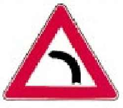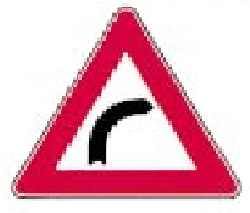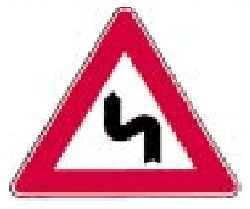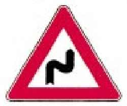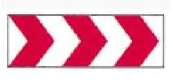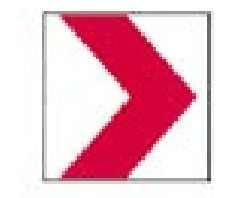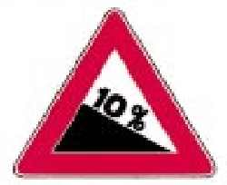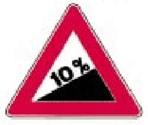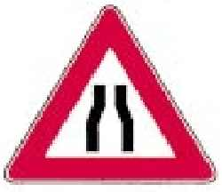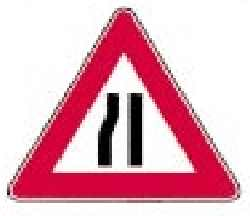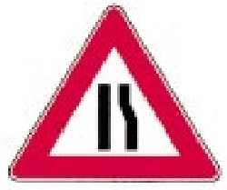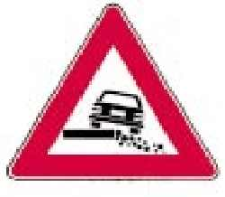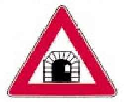 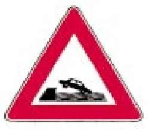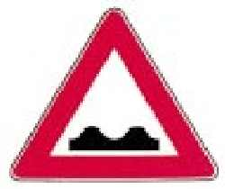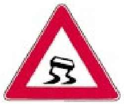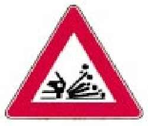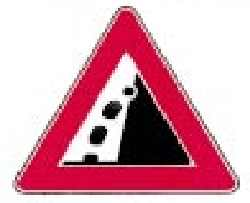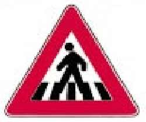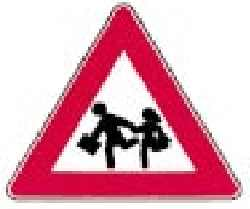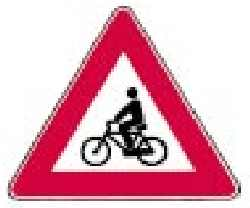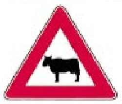
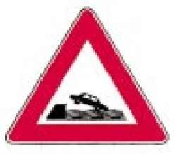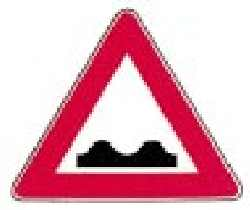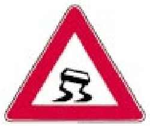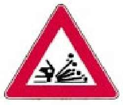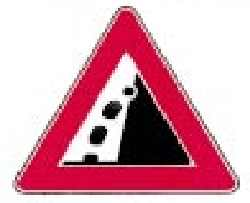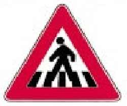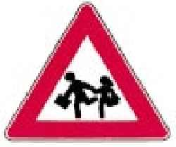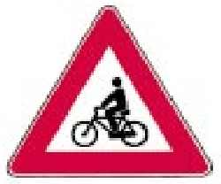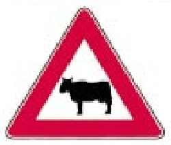 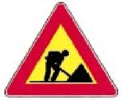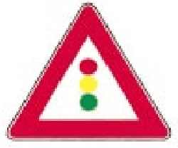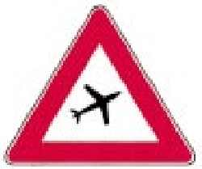
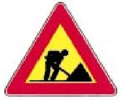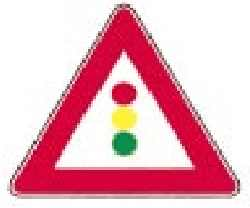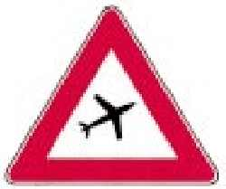 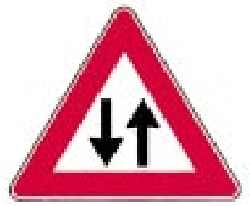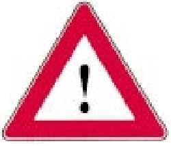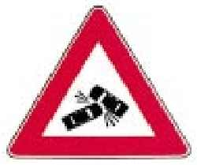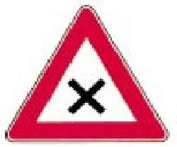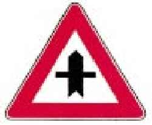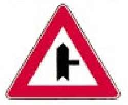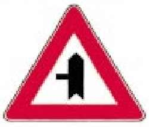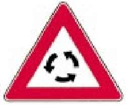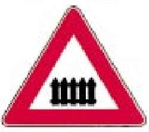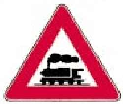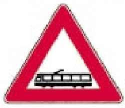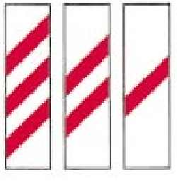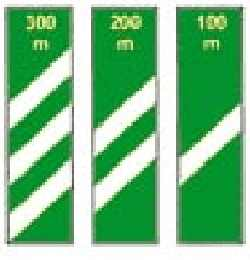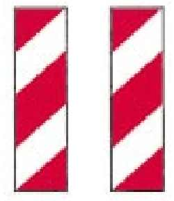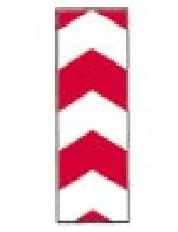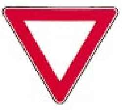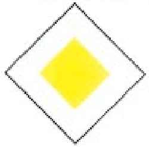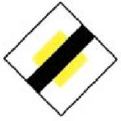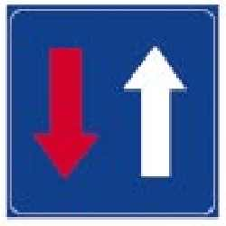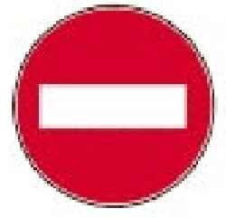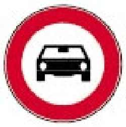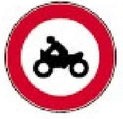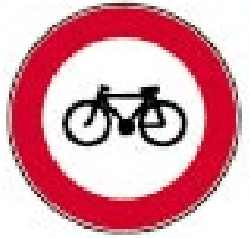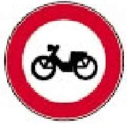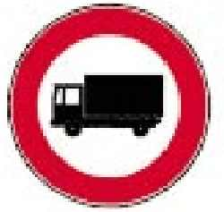
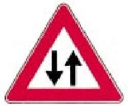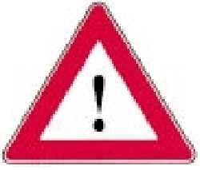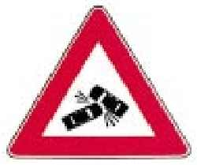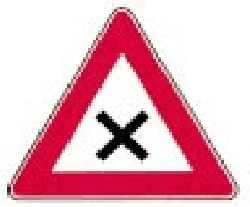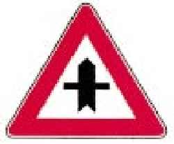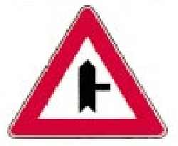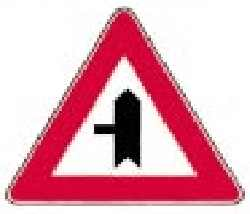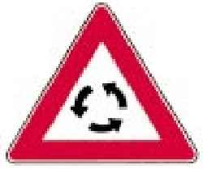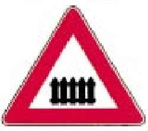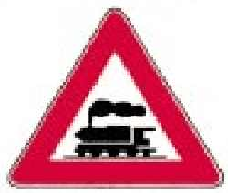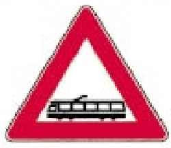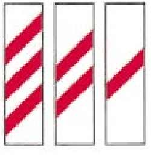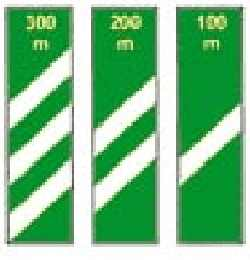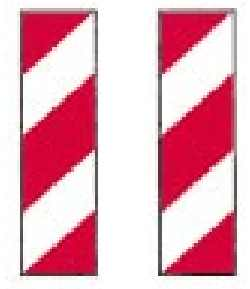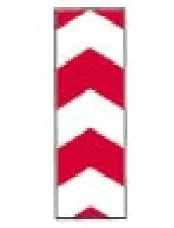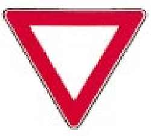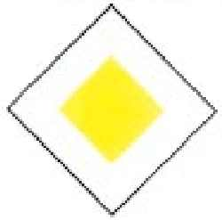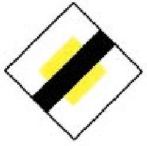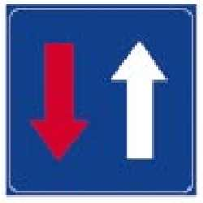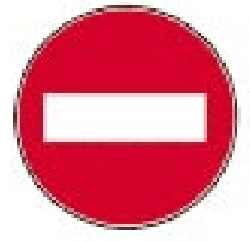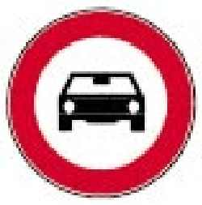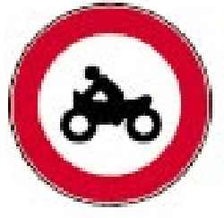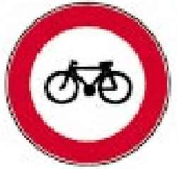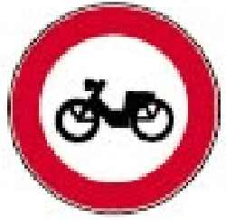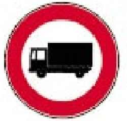